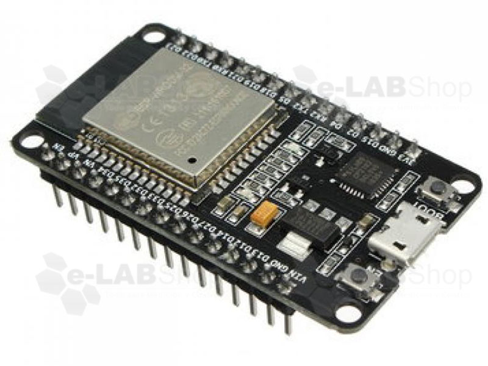

ESP32
- Especificaciones:
- 1.Voltaje de Alimentación: 3.3V DC (2.7~ 3.6V)
- 2.Corriente de Operación: ~80mA (fuente superior a 500mA)
- 3.CPU: Dual core Tensilica LX6 (32 bit)
- 4.Frecuencia de Reloj: 240MHz
- 5.ADC: 2 (12-bit)
- 6.DAC: 2 (8-bit)
- 7.Wi-Fi, Protocolo 802.11 b/g/n/e/i (802.11n up to 150 Mbps)
- 8.Bluetooth, Protocolos: V4.2 BR/EDR and BLE specification
- 9.SRAM: 520KB
- 10.Memoria Flash Externa: 4MB
Datasheet: aquí
Valor: $ 40.000 COP

Pantlla LCD Nokia 5110
- Especificaciones:
- 1.Interfaz: Conexión serial SPI
- 2.Voltaje de Operación: 2.7V a 3.3V
- 3.Corriente de Operación: < 5mA (Backlight off), < 20mA (Backlight on)
- 4.Temperatura de Operación: -10 a 70 grados Celsius
- 5.amaño: 45x45x45 mm
- 6.Controlador LCD: Philips PCD8544
tutorial: aquí
Valor: $ 11.000 COP
Libreria pantalla LCD : aquí